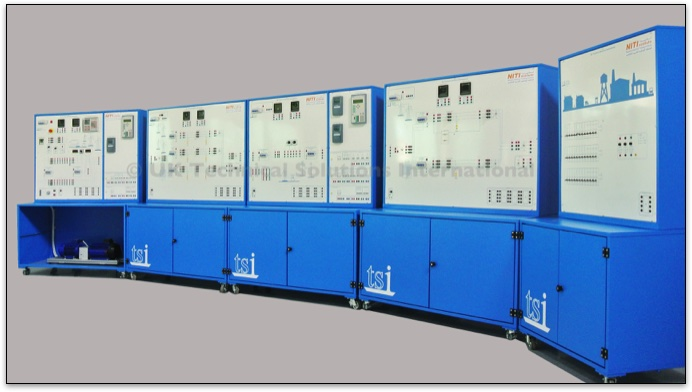
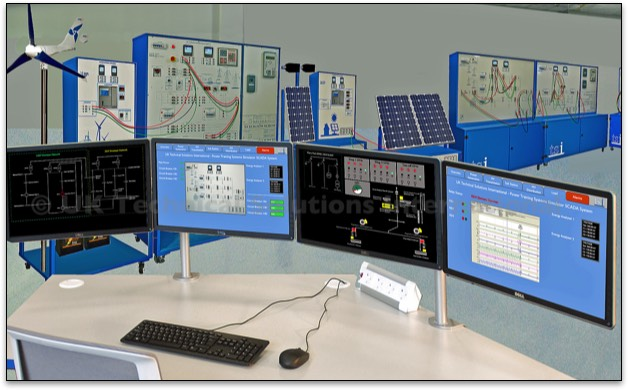

The TSI Power Training Systems Simulator (Generation and Distribution) is unique in its field. It is the only training package specifically designed to provide a completely integrated system that includes hard-desk and soft-desk power systems simulators, together with a SCADA Control System, SMART Grid System and an Instructor’s Control Station.
All the elements are intended for practical hands-on training for operators, engineers and technicians.
Many different levels of training can be carried out on the full system or on independent units if required. This includes AP (Authorised Person) training and our unique Power Dispatchers Training Simulator.
With the complete system deployed in two classrooms it is possible to accommodate up to 34 students working independently on the hard-desk and soft-desk systems.
By linking the Instructor Station with the SCADA System used with the hard-desk simulator this valuable facility enables the instructor to run a large number of different faulted and non-faulted operating scenarios.
Many of the faults that can be induced will guide the trainees on how to use professional test equipment such as automatic relay testers, high voltage test meters and hand-held system analysers.
